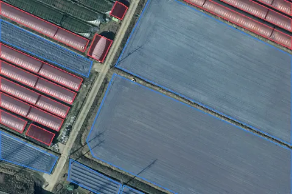
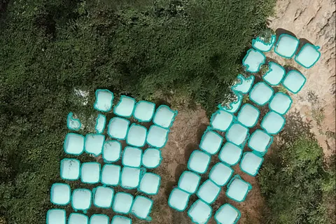
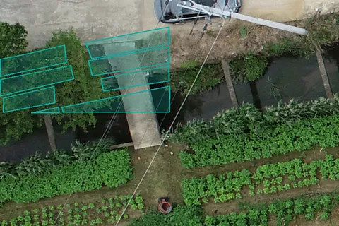
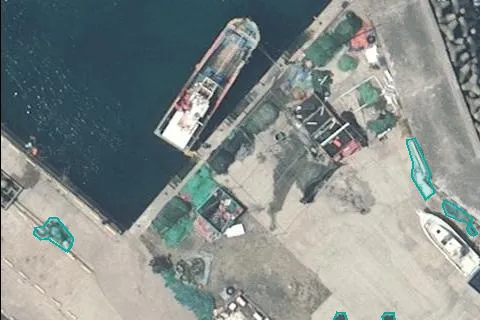
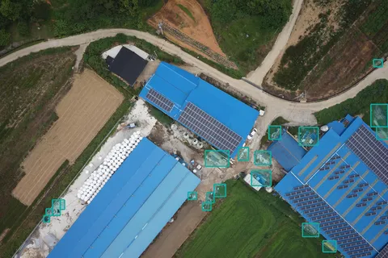
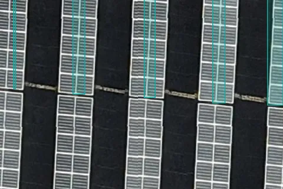
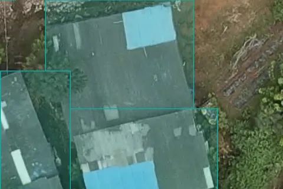

데이터
학습 데이터
영상 · 행정 자료학습 데이터
학습 데이터 올리기
라벨이 붙은 묶음 · 클래스 목록이 같은 것끼리 한 건
이 자료로 학습한 모델이 카드에 붙어 있음
약관 원문을 아직 못 봄 — 해외 기관 서비스에 쓰기 전 확인
기관이 알린 오탐 — 아직 라벨로 옮기지 않음
영상전체항공위성드론현장 사진
라벨도형상자
출처LXAI Hub공개 묶음
이용 조건확인됨확인 필요
이름 · 대상 · 지역 찾기
| 학습 데이터 | 영상 | 라벨 | 그림 | 객체 | 지역 | 출처 | 이용 조건 | 쓰임 | 판 |
|---|---|---|---|---|---|---|---|---|---|
 항공 토지피복 4분류건물 · 주차장 · 경작지 · 비닐하우스 | 항공 25cm | 도형 | 153,295 | 2,056,031 | 경기 · 경상 · 전라 · 제주 | AI Hub 가공 | 확인 필요 | 영농관리모델 1 · 표본 3건의 바탕 | 1 |
 남원 곤포사일리지곤포사일리지 | 드론 약 1.5cm | 도형 | 2,010 | 8,616 | 남원시 | LX 남원 사업 | 확인됨 | 곤포사일리지모델 1 | 1 |
 남원 비닐하우스(드론)단동 · 다동 남원 비닐하우스(드론)단동 · 다동 | 드론 약 1.5cm | 도형 | 1,953 | 3,134 | 남원시 | LX 남원 사업 | 확인됨 | 남원 2025 결과카드에는 안 씀 | 1 |
 드론 4분류(하천부지)경작지 · 비닐하우스 · 가건물 · 천막 | 드론 약 2cm | 도형 | 153,971 | 280,348 | 아산시 | AI Hub 가공 | 확인 필요 | 아직 안 씀 | 1 |
 해양쓰레기(항공)해안 쓰레기 | 항공 | 도형 | 37,023 | 59,426 | 해안 | 공개 묶음 | 확인 필요 | 아직 안 씀 | 1 |
 방치쓰레기쓰레기 더미 | 드론 사진 | 도형 | 16,702 | 68,887 | 전북 등 | 공개 묶음 | 확인 필요 | 아직 안 씀 | 1 |
 태양광태양광 패널 | 드론 정사 | 상자 | 3,682 | 5,217 | 경북 | 공개 묶음 | 확인 필요 | 아직 안 씀 | 1 |
 석면 슬레이트 지붕석면 지붕 | 드론 | 도형 | 1,316 | 1,561 | 경북 · 전북 | 공개 묶음 | 확인 필요 | 아직 안 씀 | 1 |
48건 중 8건 · 그림 많은 순더 보기